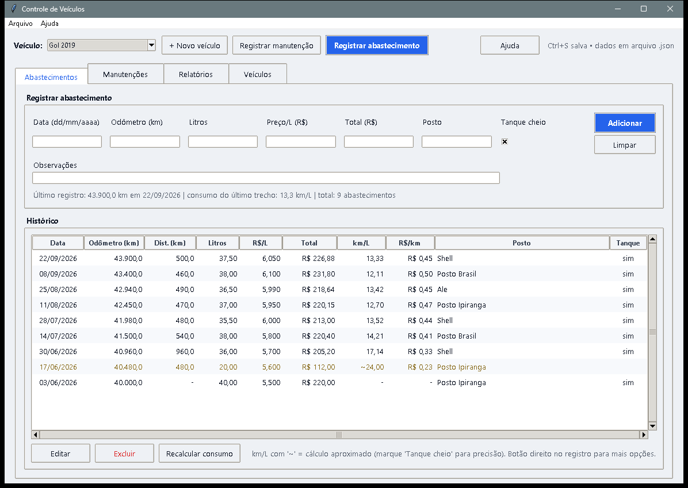
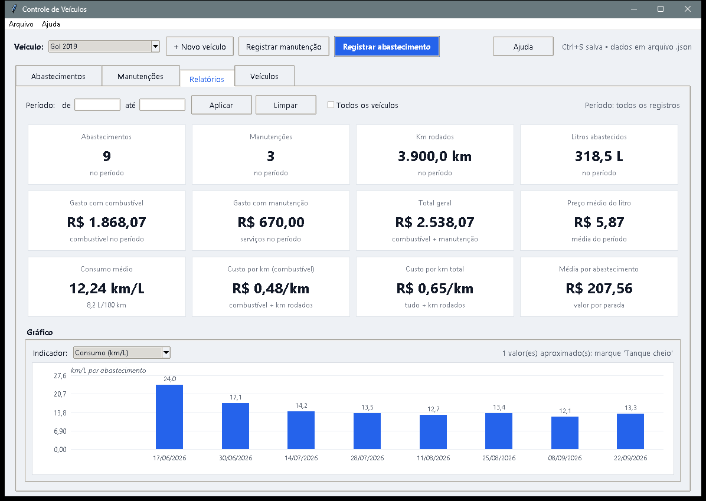
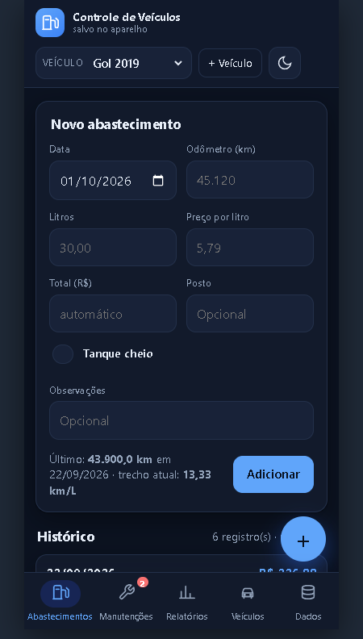

Um programa simples, em português, que roda no Windows e também no navegador. Você registra, ele calcula: quanto gastou, quanto anda e quando vem a próxima revisão.
Windows 10/11 · instala com um Enter · sem precisar de Python



Tudo o que um controle de frota precisa — e nada além disso.
Cada abastecimento vira custo por quilômetro e por mês. Veja quanto o carro consome de verdade.
Registre trocas de óleo, revisões e pneus — e receba o lembrete da próxima antes de esquecer.
Os dados ficam no seu computador (ou no seu navegador), não em servidor de ninguém. Funciona offline.
Baixe o pacote, dê dois cliques em Instalar.bat e aperte Enter. Atualizar é só rodar de novo.
Sem instalar nada e sem informar cartão: 7 dias para experimentar.
Clique em Testar agora online: o programa abre direto no navegador, no celular ou no computador.
No primeiro acesso você cria a sua conta — ela fica gravada apenas neste navegador.
Adicione um veículo, lance um abastecimento e veja os relatórios se preencherem. Você tem 7 dias.
A versão completa é um arquivo único para Windows 10/11.
Na página de releases, baixe o Controle-de-veiculos.zip e extraia tudo.
Duplo clique e Enter na pasta sugerida (ou digite a sua; ele cria a pasta do programa dentro).
O atalho Controle de Veículos aparece na Área de Trabalho. Passo a passo com fotos no manual.
O básico, respondido sem enrolação.
Não. Para Windows existe o instalador pronto (um Enter). A demonstração online não instala nada: ela abre no navegador.
Ficam no seu dispositivo. Na demonstração, apenas no navegador deste aparelho; na versão instalada, numa pasta do seu computador. Nada vai para servidor de ninguém.
A tela mostra três caminhos: baixar os seus dados (um arquivo dados.json), baixar o programa para o seu computador ou falar com a equipe por e-mail.
Não. Não pedimos cartão, e-mail nem nada: é só abrir e usar por 7 dias.
É seguro: o aviso aparece porque o programa não tem assinatura digital paga. Na tela "O Windows protegeu o PC", clique em Mais informações e depois em Executar assim mesmo. O instalador remove a marca de internet dos arquivos e o programa instalado abre sem aviso.
Se gostar, leve o programa para o seu computador. Se tiver dúvida, é só mandar um e-mail.